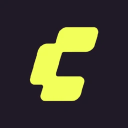

01
Créer une affiche ou une illustration
Tu ouvres le modèle de recette « texte vers image », tu décris la scène, tu choisis la taille : ton PC dessine l'image, autant de fois que tu veux, sans crédits.
Ton texte→Modèle d'image→Affiche

Les meilleures IA d'images et de vidéos, sur ton propre PC : tu relies des blocs comme des Lego, sans abonnement ni crédits. Gratuit, open source, même hors ligne.

ComfyUI fait tourner sur ton ordinateur les modèles d'IA open source qui créent des images (Flux, Qwen Image, SDXL…), des vidéos (Wan, LTX-Video, HunyuanVideo…), du son et même de la 3D. Au lieu d'une simple case de texte, tu construis une recette avec des blocs reliés (des « nœuds ») : le modèle, ton texte, la taille de l'image, puis l'enregistrement. Pas besoin de partir de zéro : des modèles de recettes tout prêts s'ouvrent en un clic. Une fois les modèles téléchargés, tout tourne chez toi, même sans Internet, sans crédits ni limite d'images.
La méthode conseillée : une appli qui installe tout (Python, dépendances) et se met à jour. Windows 10 ou plus avec une carte graphique (NVIDIA conseillée, AMD possible), Mac à puce Apple (M1 ou plus, macOS 13+), Linux (.deb ou AppImage).
Gratuit, tout reste chez toiUne archive portable pour Windows (NVIDIA, AMD, Intel ou même sans carte graphique, mais très lent), ou une installation manuelle avec Python, ou l'outil comfy-cli. Pour suivre les toutes dernières nouveautés et tous les types de cartes.
Plus techniqueLa version en ligne officielle, sur de grosses cartes graphiques louées : 5 essais gratuits, puis à partir de 20 $ par mois (16 $ en annuel) avec un quota de crédits. Utile sans carte graphique, mais tes fichiers sont alors sur leurs serveurs.
Payant, sans carte graphiqueTu ouvres le modèle de recette « texte vers image », tu décris la scène, tu choisis la taille : ton PC dessine l'image, autant de fois que tu veux, sans crédits.
Avec un modèle vidéo comme Wan, une image devient une courte vidéo : tu décris le mouvement (flammes, vent, caméra qui avance) et ComfyUI génère les images une à une.
Tu peins un masque sur une zone et tu décris ce que tu veux à la place : un objet en moins, un ciel différent, un cadre agrandi (inpainting, outpainting).
Des blocs d'agrandissement (upscale) et de détourage (enlever le fond) se branchent à la fin de n'importe quelle recette.
Une image réussie garde sa recette : glisse-la dans ComfyUI pour la refaire, change un seul bloc, ou enregistre la recette pour toute une série d'images au même style.
Lancé seul par comfyanonymous début 2023, ComfyUI est devenu l'outil de référence pour les modèles d'images et de vidéos open source. Sa société, Comfy Org, a levé 30 millions de dollars en avril 2026 (valorisation de 500 millions) et vend une version en ligne, Comfy Cloud, tandis que le logiciel reste gratuit et open source.
Mises à jour presque quotidiennes et prise en charge des nouveaux modèles d'images et de vidéos dès leur sortie, par une équipe d'environ 65 personnes.
Environ 143 500 étoiles et 17 000 forks sur GitHub, des millions d'utilisateurs et plus de 60 000 blocs créés par la communauté.
Tout tourne en local et fonctionne hors ligne ; seuls les blocs API payants (facultatifs) envoient tes données à un service. Les blocs de la communauté sont du code à installer avec prudence.
Logiciel gratuit sous GPL-3.0, financé par Comfy Org (47 millions de dollars levés) et par Comfy Cloud ; une entreprise solide, mais qui a aussi une offre payante à vendre.
Trois ans d'existence, utilisé en production par des studios et des agences ; mais l'interface en blocs demande un temps d'apprentissage et certaines recettes cassent après une mise à jour.
Comment on note : 5 critères notés sur 5, vérifiés sur GitHub, le README, la documentation officielle et les annonces de Comfy Org le 16 novembre 2026. La note sur 10 est la moyenne ramenée sur 10.
Bon pour : Images, vidéos, son et 3D avec les modèles open source, avec un contrôle total
Bon pour : De belles images très vite, sans rien installer ni régler
Bon pour : Les utilisateurs de Photoshop qui veulent l'IA dans leurs outils
Bon pour : Retoucher sur une toile avec des calques, plus simple que des blocs
Bon pour : Utiliser ComfyUI sans carte graphique puissante
Quel que soit l'outil, vérifie la licence du modèle utilisé avant de vendre une image, et n'utilise jamais l'IA pour imiter une personne réelle sans son accord.

Chaque vidéo RepoPop t'explique un dépôt GitHub utile en moins d'une minute, avec son kit comme celui-ci.